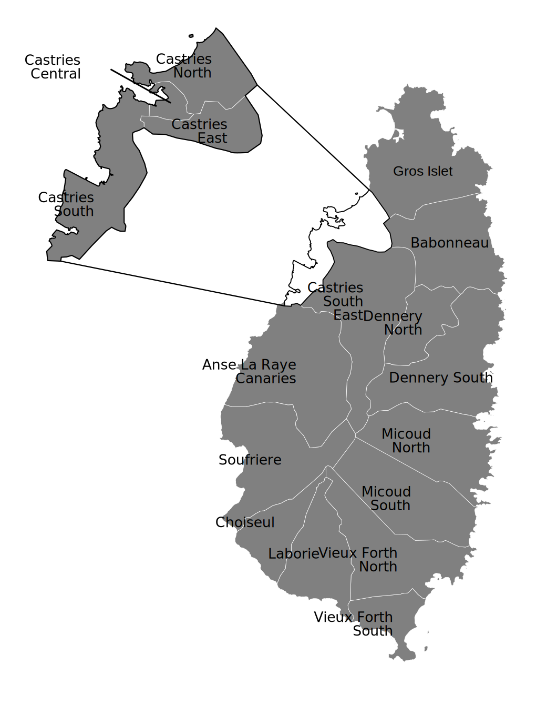

Wybory powszechne grudzień 2025: Miażdżące zwycięstwo SLP
1 grudnia 2025 roku Saint Lucia Labour Party (SLP) wygrała 14 z 17 mandatów w Izbie Zgromadzenia, zapewniając premierowi Philipowi J. Pierre'owi historyczną drugą kolejną kadencję — jako pierwszy premier ponownie wybrany od czasu Kenny'ego Anthony'ego w 2001 roku, przerywając 24-letnią passę jednorazowych rządów.
United Workers Party (UWP) została zredukowana do jednego mandatu (Micoud South), utrzymanego przez byłego premiera Allena Chanstanet. Dwóch niezależnych kandydatów sojuszniczych z rządem również zdobyło mandaty. Frekwencja wyborcza wyniosła 61,1% przy 102 023 oddanych głosach.
Kluczowe priorytety rządu na drugą kadencję: uruchomienie Funduszu Majątkowego, ukończenie lotniska Hewanorra (US$157 mln), powszechna opieka zdrowotna, rozwój energii geotermalnej, reforma podatku dochodowego od osób fizycznych i zniesienie VAT na podstawowe artykuły spożywcze.
Symbole narodowe
▼
 Flaga Saint Lucia
Flaga Saint Lucia
Lazurowo-niebieskie pole ze złotym trójkątem przed czarnym trójkątem w kształcie strzałki, oba nałożone na biały trójkąt. Niebieski reprezentuje niebo i morze, złoty symbolizuje słońce, a czarny i biały przedstawiają podwójne dziedzictwo narodu.
 Herb Saint Lucia
Herb Saint Lucia
Przedstawia tarczę z bambusowym krzyżem, flankowan przez dwie papugi Saint Lucia. Motto brzmi “The Land, The People, The Light” (Ziemia, Ludzie, Światło).
Szczegóły narodowe
Hymn narodowy: “Sons and Daughters of Saint Lucia” — przyjęty w dniu niepodległości, 22 lutego 1979
Motto narodowe: “The Land, The People, The Light”
Dzień Narodowy: 22 lutego (Dzień Niepodległości, 1979)
Typ rządu: Demokracja parlamentarna w ramach monarchii konstytucyjnej (państwo Wspólnoty Narodów)
Głowa państwa
▼
Gubernator Generalny: Sir Cyril Errol Melchiades Charles, GCMG
Mianowany 1 listopada 2024 przez Króla Karola III, po pełnieniu funkcji Gubernatora Generalnego ad interim przez trzy lata, po rezygnacji Sir Neville'a Cenac. Odznaczony Wielkim Krzyżem Orderu św. Michała i św. Jerzego (GCMG) w Pałacu Buckingham 13 marca 2025.
Sir Cyril Charles jest synem George'a F.L. Charlesa, pierwszego Premiera Saint Lucia i założyciela Saint Lucia Labour Party.
Gubernator Generalny pełni funkcję przedstawiciela Monarchy (Króla Karola III) w Saint Lucia. Rola jest w dużej mierze ceremonialna, z kluczowymi funkcjami konstytucyjnymi obejmującymi:
- • Mianowanie Premiera (lidera partii/koalicji większościowej)
- • Otwieranie i rozwiązywanie Parlamentu
- • Mianowanie 2 niezależnych Senatorów
- • Udzielanie sankcji królewskiej dla ustawodawstwa
- • Mianowanie Lidera Opozycji
Szef rządu
▼
Premier: Hon. Philip J. Pierre
Partia: Saint Lucia Labour Party (SLP)
Okręg wyborczy: Castries East (wygrana z 77,8% w 2025)
Pierwszy raz wybrany na premiera: lipiec 2021
Ponownie wybrany: 1 grudnia 2025 — pierwszy premier ponownie wybrany od 2001, przerywając 24-letnią passę jednorazowych rządów
Sprawowane teki: Finanse, Rozwój Gospodarczy; Sprawiedliwość i Bezpieczeństwo Narodowe; Rozwój Okręgów i Umacnianie Społeczności
Wicepremier: Dr Ernest Hilaire
Okręg wyborczy: Castries South (wygrana z 67,7% w 2025) | Teki: Turystyka, Handel, Inwestycje, Przemysł Kreatywny, Kultura i Dziedzictwo
Ministrowie gabinetu
▼Gabinet został zaprzysiężony po wyborach powszechnych 1 grudnia 2025. Składa się z 16 ministrów, w tym Premiera, wybranych spośród posłów i jednego mianowanego senatora.
| # | Minister | Teka | Okręg wyborczy | Partia |
|---|---|---|---|---|
| 1 | Hon. Philip J. Pierre | Premier; Finanse, Rozwój Gospodarczy; Sprawiedliwość i Bezpieczeństwo Narodowe | Castries East | SLP |
| 2 | Dr. Ernest Hilaire | Wicepremier; Turystyka, Handel, Inwestycje, Przemysł Kreatywny, Kultura i Dziedzictwo | Castries South | SLP |
| 3 | Hon. Stephenson King | Służba Publiczna, Transport, Informacja i Regulacje Mediów | Castries North | IND |
| 4 | Hon. Shawn Edward | Infrastruktura, Usługi Portowe i Energia | Dennery North | SLP |
| 5 | Hon. Moses Jn Baptiste | Zdrowie, Dobrostan i Żywienie | Vieux-Fort North | SLP |
| 6 | Hon. Alva Baptiste | Sprawy Zagraniczne, Handel Międzynarodowy, Lotnictwo Cywilne i Sprawy Diaspory | Laborie/Augier | SLP |
| 7 | Hon. Kenson Casimir | Edukacja, Rozwój Młodzieży, Sport i Transformacja Cyfrowa | Gros Islet | SLP |
| 8 | Hon. Richard Frederick | Budownictwo Mieszkaniowe, Samorząd Lokalny i Odnowa Miejska | Castries Central | IND |
| 9 | Hon. Wayne Girard | Rozwój Gospodarczy i Gospodarka Młodzieżowa | Anse-La-Raye/Canaries | SLP |
| 10 | Hon. Emma Hippolyte | Równość, Praca, Sprawy Płci, Sprawiedliwość Społeczna i Ochrona Konsumentów | Soufriere/Fond St Jacques | SLP |
| 11 | Hon. Jeremiah Norbert | Sprawy Wewnętrzne, Zapobieganie Przestępczości, Rozwiązywanie Konfliktów i Osoby z Niepełnosprawnościami | Micoud North | SLP |
| 12 | Hon. Danny Butcher | Edukacja (Wczesne Dzieciństwo, Kształcenie Ustawiczne i Specjalne, Transformacja Cyfrowa) | Vieux-Fort South | SLP |
| 13 | Hon. Keithson Charles | Rozwój Fizyczny i Usługi Publiczne | Choiseul/Saltibus | SLP |
| 14 | Hon. John Paul Estephane | Minister w Ministerstwie Turystyki, Handlu, Inwestycji, Przemysłu Kreatywnego, Kultury i Dziedzictwa | Babonneau | SLP |
| 15 | Hon. Lisa Jawahir | Rolnictwo, Rybołówstwo, Bezpieczeństwo Żywnościowe i Zmiany Klimatu | Castries South East | SLP |
| 16 | Sen. Dr. Shanda Harracksingh | Minister w Kancelarii Premiera | Senator (mianowany) | SLP |
Uwaga dotycząca niezależnych
Stephenson King (były premier, 2007–2011) i Richard Frederick to niezależni posłowie zasiadający w gabinecie premiera Pierre'a, co daje rządowi efektywną większość parlamentarną 16 z 17 mandatów.
Parlament Saint Lucia
▼
Saint Lucia posiada dwuizbowy parlament składający się z Izby Zgromadzenia i Senatu.
Izba Zgromadzenia (Izba niższa)
17 wybieralnych członków (jednomandatowe okręgi, system większościowy)
Marszałek: Hon. Claudius James Francis (ponownie mianowany 16 grudnia 2025; pełni funkcję marszałka od 2021)
Obecny skład:
- • SLP: 14 mandatów
- • Niezależni (prorządowi): 2 mandaty
- • UWP (opozycja): 1 mandat
Senat (Izba wyższa)
11 mianowanych członków (nie wybieranych)
- • 6 mianowanych przez Premiera
- • 3 mianowanych na wniosek Lidera Opozycji
- • 2 mianowanych przez Gubernatora Generalnego (niezależni)
Przewodniczący Senatu: Hon. Alvina Reynolds (ponownie mianowana 16 grudnia 2025)
Skład Senatu (mianowany 15 grudnia 2025)
| Senator | Mianowany przez | Uwagi |
|---|---|---|
| Hon. Alvina Reynolds | Premiera | Przewodnicząca Senatu |
| Dr. Shanda Lee Harracksingh | Premiera | Minister gabinetu |
| Ignatius Jean | Premiera | — |
| Dr. Virginia Poyotte | Premiera | — |
| Dr. Allison A. Jean | Premiera | — |
| Mtonya Deterville | Premiera | — |
| Tommy Descartes | Lidera Opozycji | — |
| Elisha Norbert | Lidera Opozycji | — |
| Angelina Phera Polius | Lidera Opozycji | — |
| Embert Charles | Gubernatora Generalnego | Niezależny |
| Deale A. L. Lee | Gubernatora Generalnego | Niezależny |
Opozycja
▼Lider Opozycji: Allen Chastanet (UWP)
Okręg wyborczy: Micoud South (wygrana z 58,6% w 2025) | Były premier: 2016–2021
Chastanet jest jedynym członkiem UWP w Izbie Zgromadzenia po historycznej klęsce partii w grudniu 2025. Złożył rezygnację ze stanowiska lidera politycznego UWP na początku grudnia 2025, ale Rada Krajowa UWP jednogłośnie odrzuciła jego rezygnację, a on kontynuuje jako lider partii do następnego kongresu.
Partie polityczne
▼| Partia | Założona | Ideologia | Lider | Mandaty 2025 |
|---|---|---|---|---|
| Saint Lucia Labour Party (SLP) | 1949 | Centrolewica, socjaldemokracja | Philip J. Pierre | 14 |
| United Workers Party (UWP) | 1964 | Centroprawica, liberalny konserwatyzm | Allen Chastanet | 1 |
| Lucian People’s Movement (LPM) | ~2010 | Populistyczna | Therold Prudent | 0 |
| National Conservative Party (NCP) | Niedawno | Konserwatywna | — | 0 |
Dominacja dwupartyjnego systemu
Polityka Saint Lucia jest zdominowana przez SLP i UWP od uzyskania niepodległości w 1979 roku. Obie partie na przemian sprawowały władzę, a ponowne zwycięstwo SLP w 2025 roku było pierwszym przypadkiem od 2001, gdy rządzący partia wygrała kolejne wybory.
Wyniki wyborów powszechnych 2025
▼Wybory powszechne przeprowadzone 1 grudnia 2025 przyniosły SLP drugą kolejną kadencję — historyczne osiągnięcie przełamujące 24-letni wzorzec jednorazowych rządów.
Wyniki ogólne
| Partia | Mandaty | Głosy | Udział głosów | Zmiana |
|---|---|---|---|---|
| SLP | 14 | 57 169 | 56,0% | +1 mandat |
| UWP | 1 | 38 737 | 38,0% | −1 mandat |
| Niezależni | 2 | 6 075 | 6,0% | 0 |
| NCP | 0 | 42 | 0,04% | — |
| Razem | 17 | 102 023 | 100% | — |
Wyniki w okręgach
| Okręg wyborczy | Zwycięzca | Partia | Głosy | % |
|---|---|---|---|---|
| Gros Islet | Kenson Casimir | SLP | 8 175 | 67,9% |
| Babonneau | John Paul Estephane | SLP | 3 918 | 58,8% |
| Castries North | Stephenson King | IND | 3 485 | 66,0% |
| Castries East | Philip J. Pierre | SLP | 4 014 | 77,8% |
| Castries Central | Richard Frederick | IND | 2 151 | 59,5% |
| Castries South | Dr. Ernest Hilaire | SLP | 3 228 | 67,7% |
| Anse-La-Raye/Canaries | Wayne Girard | SLP | 2 746 | 56,0% |
| Soufriere/Fond St Jacques | Emma Hippolyte | SLP | 2 622 | 51,8% |
| Choiseul/Saltibus | Keithson Charles | SLP | 2 941 | 53,9% |
| Laborie/Augier | Alva Baptiste | SLP | 2 612 | 81,2% |
| Vieux-Fort South | Danny Butcher | SLP | 3 564 | 75,2% |
| Vieux-Fort North | Moses Jn Baptiste | SLP | 2 444 | 72,4% |
| Micoud South | Allen Chastanet | UWP | 2 292 | 58,6% |
| Micoud North | Jeremiah Norbert | SLP | 2 321 | 57,4% |
| Dennery South | Paul Prospere | SLP | 1 566 | 50,9% |
| Dennery North | Shawn Edward | SLP | 2 786 | 58,0% |
| Castries South East | Lisa Jawahir | SLP | 4 299 | 57,4% |
Sądownictwo
▼
System prawny Saint Lucia opiera się na angielskim common law. Sądownictwo działa niezależnie od władzy wykonawczej i ustawodawczej.
System sądowy
- • Sądy magistrackie — pierwsza instancja dla spraw drobnych
- • High Court — poważne sprawy karne i cywilne
- • Eastern Caribbean Court of Appeal — jurysdykcja apelacyjna
- • Caribbean Court of Justice (CCJ) — ostateczny sąd apelacyjny (od lipca 2023)
Przystąpienie do CCJ (lipiec 2023)
Saint Lucia przystąpiła do jurysdykcji apelacyjnej Caribbean Court of Justice w lipcu 2023, zastępując Komitet Sądowy Tajnej Rady (Privy Council) w Londynie jako ostateczny sąd apelacyjny. CCJ pełni również funkcję sądu pierwszej instancji w sprawach dotyczących traktatu CARICOM.
Eastern Caribbean Supreme Court (ECSC)
Saint Lucia jest członkiem ECSC, który obsługuje sześć niezależnych państw OECS i trzy terytoria brytyjskie. ECSC składa się z High Court of Justice i Court of Appeal, z siedzibą w Castries, Saint Lucia.
Kluczowe inicjatywy polityczne
▼Główne polityki rządowe i działania ustawodawcze kształtujące rozwój gospodarczy i społeczny Saint Lucia:
Fundusz Majątkowy (uchwalony w marcu 2025)
Gabinet zatwierdził 3 lutego 2025; ustawa o SWF została uchwalona przez Parlament w marcu 2025. Finansowany z wpływów CBI/CIP, cele Funduszu obejmują zrównoważony rozwój gospodarczy, zachowanie bogactwa międzypokoleniowego, stabilizację fiskalną i odporność klimatyczną. SWF jest teraz w fazie uruchamiania, a struktury zarządzania są ustanawiane.
Budżet 2025/26 — rekordowe EC$2,06 mld
Największy budżet w historii Saint Lucia. Wydatki kapitałowe ustalone na EC$325,6 mln (27% przydzielone Departamentowi Infrastruktury). Prognozowane dochody na poziomie EC$1,71 mld (EC$1,45 mld podatkowe, EC$171,9 mln pozapodatkowe).
| Działanie | Szczegóły |
|---|---|
| Kwota wolna od podatku | Podniesiona z EC$18 400 do EC$40 000 — ponad dwukrotne zwiększenie progu |
| Dochody emerytalne | Zwolnione z podatku od stycznia 2025 |
| Emerytury NIC | Waloryzowane o wskaźnik CPI od lipca 2025 |
| VAT na artykuły spożywcze | VAT usunięty z ponad 70 artykułów spożywczych od lipca 2026 |
| Opłata za wylot z lotniska | Zmniejszona o połowę z EC$68 do EC$34 |
| Cyberbezpieczeństwo i AI | Wprowadzono nowe ulgi podatkowe |
| Amnestia podatkowa | Przedłużona do maja 2026 |
| Bonus emerytalny EC$600 | Jednorazowa wypłata EC$600 dla emerytów |
| Składki NIC | Wzrost składek NIC o 3,9% |
Wynagrodzenia w sektorze publicznym
Podwyżka o 6% na lata 2022–2025, następnie podwyżka o 7% na lata 2025–2028, z korzyścią dla ponad 11 000 pracowników publicznych.
Ustawa o zmianach klimatu 2024
Przełomowa ustawa formalizująca Krajowy Komitet ds. Zmian Klimatu (NCCC) i wprowadzająca zarządzanie klimatyczne do prawa. Jedna z pierwszych takich ustaw we wschodnim Karaibach.
Jednostka Finansowania Klimatycznego (wrzesień 2025)
Uruchomiona we współpracy z Global Green Growth Institute (GGGI), finansowana przez NDC Partnership Action Fund. Koordynuje mobilizację finansowania klimatycznego dla Saint Lucia.
Powszechna opieka zdrowotna
Plan UHC przedstawiony Parlamentowi w kwietniu 2025. Budżet zdrowotny przekracza XCD $206 mln (największy w historii), z proponowaną trzypoziomową strukturą świadczeń.
Ostatnie ustawodawstwo i programy społeczne
Program ubezpieczenia od bezrobocia (sierpień 2025)
Uruchomiony w sierpniu 2025 za pośrednictwem National Insurance Corporation (NIC). Zapewnia tymczasowe wsparcie dochodowe dla kwalifikujących się pracowników, którzy niedobrowolnie stracili pracę. Część szerszego pakietu reform NIC, który obejmował również wzrost składek NIC o 3,9% i waloryzację emerytur o wskaźnik CPI.
Ustawa o konopiach i konopiach przemysłowych 2025
Wprowadzona do Parlamentu w 2025, ale jeszcze nie uchwalona. Ustawa proponuje regulowane ramy uprawy, przetwarzania i sprzedaży konopi, w tym sektora konopi przemysłowych. Jeśli zostanie uchwalona, stworzy system licencjonowania pod nadzorem Cannabis Regulatory Authority, z przepisami dotyczącymi udziału drobnych rolników i eksportu.
Pakiet reform NIC
- • Wzrost składek NIC o 3,9%
- • Emerytury NIC teraz waloryzowane o CPI od lipca 2025
- • Jednorazowy bonus EC$600 dla wszystkich emerytów NIC
- • Program ubezpieczenia od bezrobocia uruchomiony w sierpniu 2025
- • Dochody emerytalne w pełni zwolnione z podatku od stycznia 2025
ePaszport i modernizacja granic
Saint Lucia rozpoczęła wydawanie ePaszportów zgodnych z ICAO w 2025 roku w ramach szerszego programu modernizacji bezpieczeństwa granic i tożsamości cyfrowej. Biometryczny ePaszport ułatwia szybsze przetwarzanie na granicach międzynarodowych.
Odporność klimatyczna
▼Zmiany klimatu stanowią egzystencjalne zagrożenie dla gospodarki, infrastruktury i zasobów naturalnych Saint Lucia. Rząd odpowiedział najbardziej ambitnym karaibskim ramami polityki klimatycznej, opartymi na NDC 3.0 i Ustawie o zmianach klimatu 2024.
NDC 3.0 — Krajowy Wkład Klimatyczny (luty 2025)
Saint Lucia złożyła pierwszy NDC 3.0 na Karaibach w lutym 2025 — najbardziej ambitny plan klimatyczny w regionie.
| Cel energii odnawialnej (2030) | 40% produkcji energii elektrycznej |
| Cel energii odnawialnej (2035) | 46% produkcji energii elektrycznej |
| Sektor transportu | Cele redukcji emisji uwzględnione po raz pierwszy |
| Priorytety adaptacyjne | Bezpieczeństwo wodne, odporność wybrzeża, rolnictwo, rybołówstwo |
| Obecna zależność od diesla | ~95% energii elektrycznej wytwarzanej z diesla (LUCELEC) |
Prognozy klimatyczne dla Saint Lucia
| Czynnik ryzyka | Prognoza | Wpływ na biznes |
|---|---|---|
| Temperatura | +1,0–1,5°C do 2050 | Zwiększone koszty chłodzenia, stres cieplny w rolnictwie |
| Opady | −15% do −48% (zależnie od scenariusza) | Stres wodny wpływa na rolnictwo, turystykę, budownictwo mieszkaniowe |
| Podnoszenie poziomu morza | 0,3–0,6 metra do 2100 | Ryzyko powodzi/erozji nieruchomości przybrzeżnych; narażenie infrastruktury |
| Intensywność huraganów | Mniej, ale silniejsze burze | Rosnące koszty ubezpieczenia aktywów narażonych na klimat |
| Bielenie koralowców | Przyspieszające z ociepleniem oceanów | Wpływ na turystykę nurkową i produktywność rybołówstwa |
Projekty adaptacji klimatycznej
| Projekt | Finansowanie | Zakres |
|---|---|---|
| FISH-ADAPT (GEF/FAO/GCF) | US$16,7 mln | Adaptacja rybołówstwa karaibskiego do zmian klimatu — dotyczy przesunięć zasobów rybnych i degradacji koralowców. Saint Lucia jest bezpośrednim beneficjentem. |
| Bank Światowy - odporność na powodzie | US$25 mln | Zarządzanie ryzykiem powodziowym: ulepszenia infrastruktury w obszarach zagrożonych powodziami, systemy wczesnego ostrzegania. |
| CCRIF SPC (ubezpieczenie parametryczne) | Składki rządowe | Caribbean Catastrophe Risk Insurance Facility — szybkie wypłaty w ciągu 14 dni po kwalifikującym się huraganie, trzęsieniu ziemi lub nadmiernych opadach. |
| Odwierty geotermalne (RESDP) | US$35,8 mln (CIF/Bank Światowy) | Poszukiwawcze odwierty geotermalne przy Sulphur Springs — mogą zapewnić bazowe odnawialne wytwarzanie energii. |
Klimat a szanse biznesowe
Transformacja tworzy znaczące możliwości inwestycyjne w: instalacji i konserwacji energii odnawialnej, technologii oszczędzania wody, rolnictwie odpornym na klimat (hydroponika, nawadnianie kroplowe), inżynierii ochrony wybrzeża, zielonym budownictwie i infrastrukturze ładowania pojazdów elektrycznych. Program Caribbean Greenpreneurs oferuje do US$50 000 w nieoprocentowanych pożyczkach dla zielonych przedsiębiorstw. Zobacz Startupy i sektory oraz Kluczowe sektory.
Kluczowe organy regulacyjne
▼Te agencje są kluczowe dla prowadzenia działalności gospodarczej i inwestycji w Saint Lucia:
| Organ | Rola | Kluczowe funkcje |
|---|---|---|
| Financial Services Regulatory Authority (FSRA) | Nadzór sektora finansowego | Licencjonuje i reguluje ubezpieczenia, usługi pieniężne, banki międzynarodowe, fundusze inwestycyjne, unie kredytowe |
| Eastern Caribbean Central Bank (ECCB) | Organ monetarny | Zarządza dolarem EC, nadzoruje banki komercyjne, utrzymuje 48-letni peg do USD (XCD 2,70 = USD 1) |
| National Utilities Regulatory Commission (NURC) | Regulacja mediów (zał. 2016) | Reguluje usługi elektryczne, wodne i kanalizacyjne; zatwierdza zmiany taryf |
| National Telecommunications Regulatory Commission (NTRC) | Regulator telekomunikacji | Licencjonuje operatorów telekomunikacyjnych, zarządza widmem, egzekwuje konkurencję |
| Komisarz ds. Ochrony Danych | Prywatność i ochrona danych | Egzekwuje Data Protection Act 2011; rejestruje administratorów danych |
| Saint Lucia Bureau of Standards (SLBS) | Normy i jakość | Testowanie produktów, certyfikacja i opracowywanie norm krajowych |
| Invest Saint Lucia | Promocja inwestycji | Przyciąga BIZ, wspiera inwestorów, zarządza strefami wolnymi i okręgami przemysłowymi |
| Financial Intelligence Authority (FIA) | Monitoring AML/CFT | Monitoruje podejrzane transakcje i egzekwuje przepisy o przeciwdziałaniu praniu pieniędzy |
| Youth Economy Agency (YEA) | Przedsiębiorczość młodzieży (zał. 2022) | Zapewnia granty, pożyczki i szkolenia dla młodych przedsiębiorców w wieku 18–35 lat na mocy Youth Economy Act |